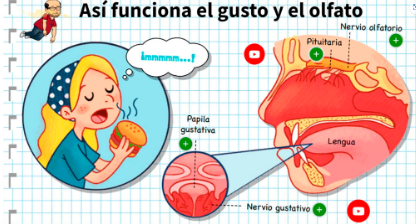
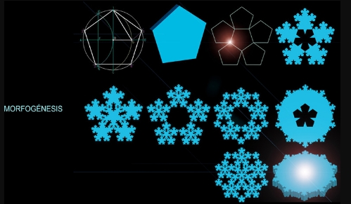

A continuación encontrarás las definiciones de las principales palabras y expresiones relacionadas con la asignatura de Pensamiento Sistemico
Sistema
Conjunto de partes coordinadas y en interaccion para alcanzar un conjunto de objetivos.
Sistema Abierto
Un sistema que intercambia materia, energia e informaciòn con su entorno (El ecosistema de una selva tropical).
Sistema Cerrado
No intercambia la energia con su medio (Ya sea importación como exportación) ejemplo: Reloj de cuerda
Sistema Natural
Es un sistema interconectado de elementos y procesos que interactúan de manera dinámica con la naturaleza. Ejemplo (El cuerpo Humano).
Sistema Artificial
Este sistema fue creado por el ser humano y sirve a lo contrario del sistema natural ya que se originan de la acción humana. Ejemplo (Una computadora).
Sistema Deterministico
En este sistema el azar no está involucrado en el desarrollo de los futuros estados del sistema. Ejemplo (Maquina Turing).
Sistema Probabilistico
Se basa en la teoría de la probabilidad o en la aleatoriedad para presidir eventos futuros. Ejemplo (Lotería).
GESTALT
Una forma de organizacion donde el todo es mas que la suma de sus partes. Comolos rostros humanos, que tendemos a ver como un todo, aunque estén compuestos de partes distintas, como ojos, nariz, boca, etc.
Equinifinidad
Es un concepto que sostiene que, en sistemas dinámicos y complejos, múltiples trayectorias o condiciones iniciales pueden converger en un mismo estado o resultado final. Ejemplo (Formación de un bosque).
Sinergia
Acción de dos o más causas cuyo efecto es superior a la suma de los efectos individuales. Ejemplo (El conjunto del gusto y el olfato para saborear alimentos).
Recursividad
Podemos entender por recursividad el hecho de que un objeto sinergetico, un sistema, este compuesto de partes con caracteristicas tales que son a su vez objetos sinergeticos (Sistemas). Ejemplo la factorial de un número.
Morfogenesis
El proceso o desarrollo de una forma o Estructura. Ejemplo(Copo de nieve)
Organicidad
Es un sistema constituido por partes que forman un conjunto coherente un ejemplo puiede ser los sistemas vivos ya que en general poseen una caracteristica que los lleva no solo a permanecer (o sobrevivir) sino a crecer y expandirse. Ejemplo(Naturaleza)
Isomorfismo
La relacion entre dos sistemas que tiene una misma estructura.

Homeomorfismo
Una relacion de similitud estructural entre dos sistemas, aunque no necesariamente identica.
Homeostasis
Sirve para referirse a la capacidad de ciertos programas o sistemas cibernéticos para autorregular algunas de sus funciones y mantener el equilibrio entre las interrelaciones de sus diversos componentes. Ejemplo (Temperatura del cuerpo Humano)